Four iterations, from one owner session on 30 October 2026. The save path was rebuilt because it had never worked; the editing controls moved from a strip across the chart to a panel beside it; and the marks, rows and labels gained the placing and styling the owner asked for.
Every save produced a corrupt file, first try, on every build that
shipped. The save located its insertion point by matching the
document’s text, and a built PowerRoadmap inlines its own source — so
the first </body> in the file is inside the minified
source of the very function doing the injecting, 137 KB before the
real one. The plan’s JSON landed in the middle of the script, which then
failed to parse. The reopened file looked almost right, because
outerHTML had captured the rendered chart: a picture of the
chart, holding the document from before the save, with nothing
running behind it.
No textual marker is safe in a file that contains its own source, so the
save addresses the page by element identity instead — clone,
querySelector, textContent — and never pattern-matches
it. Two more wounds sat on the same path: the in-app update ran that same
injector over a freshly downloaded build and wrote the result to the
owner’s file, and saving from the dev server could never work at all,
because it serialised a stub whose only script is
/src/main.tsx.
Stated, not shown: the broken reopened file was observed in a browser and measured, but no screenshot of it was kept before the fix landed.
It is now gated end to end — the test saves through the app’s own Ctrl+S,
opens the result as a local file, edits it, saves again from that
file, and opens it once more. It also refuses a stale
dist-template: a template built before the fix reopened
cleanly and would have reported the save as working.
SRS-PERS-031 … SRS-PERS-039
“I’m clicking on a task and it’s like it’s too much. It doesn’t fit. The rounding is not good. The sliding bar escapes from the actual card.” Measured at 1440×900 with one task selected, the bar’s contents were 1210px wide inside 986px: the whole right-hand group sat outside it and the px/day readout overhung its own rounded edge by 99px. A strip grows only sideways, while the selection’s controls grow with what is selected.
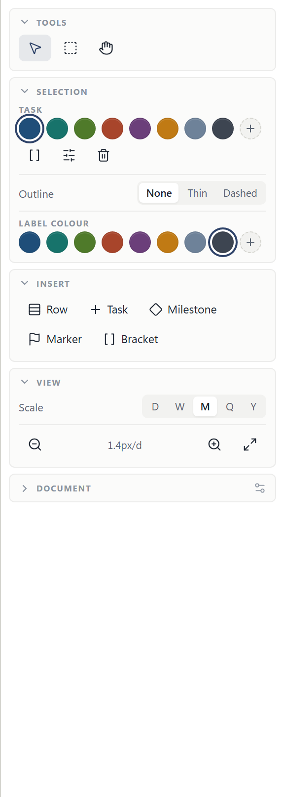
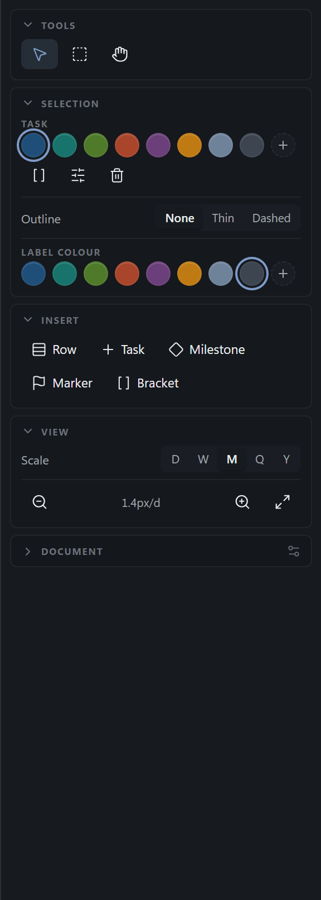
scrollWidth === clientWidth, Document open and a task selected
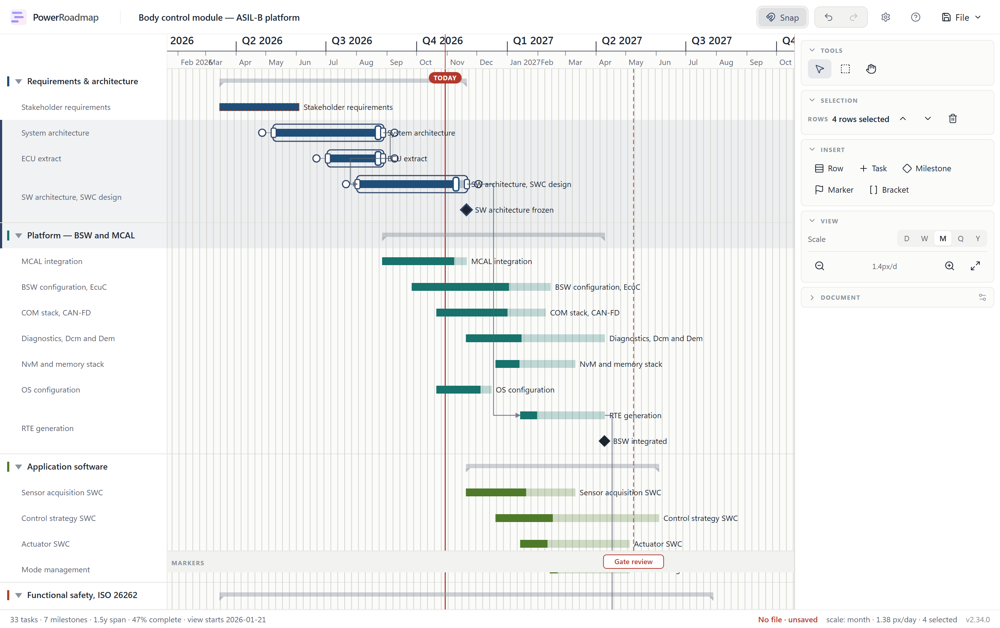
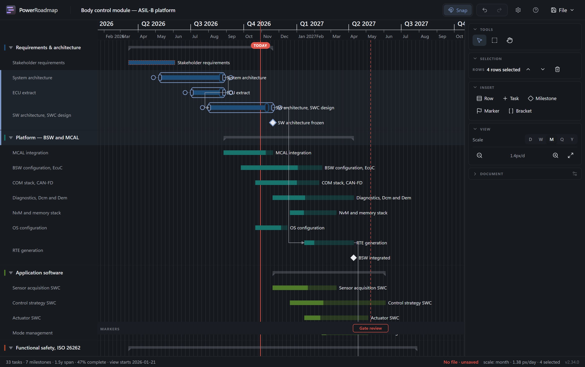
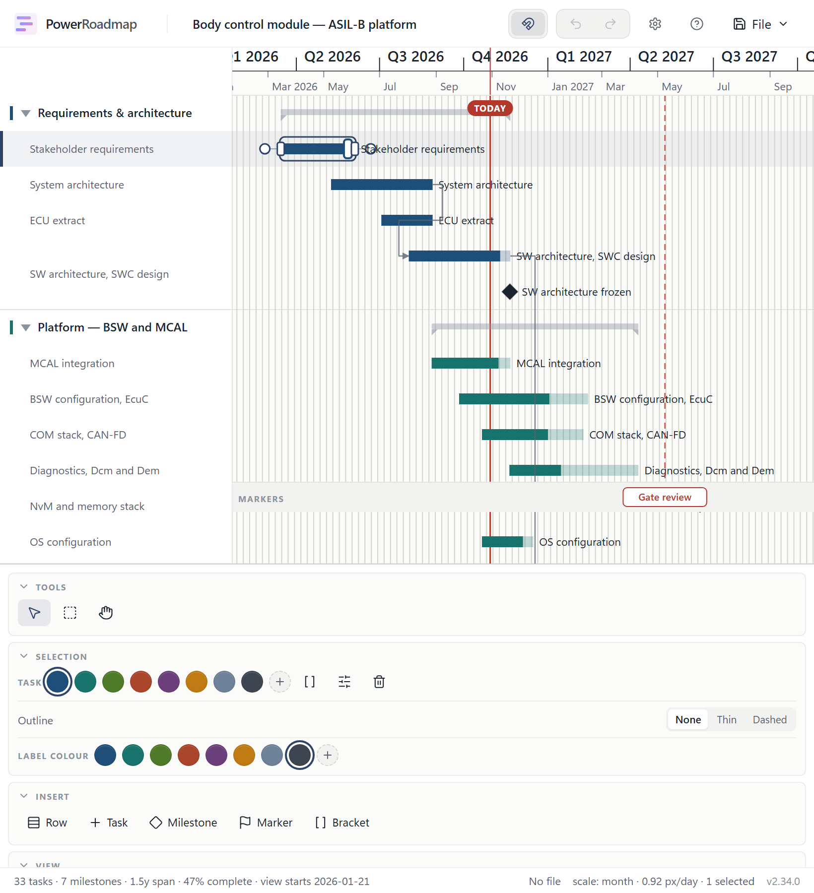
The gear no longer clears the selection. Sections coexist, so opening Document settings has nothing to take the place of. Two smoke tests that asserted the old behaviour now state the new one.
The foot-docked panel has a fixed height (34vh), not a maximum. It therefore occupies that space even when nearly empty. The alternative — sizing to contents — made the chart jump 74px every time you selected something.
SRS-LAY-030 … SRS-LAY-033
Reordering or clearing a section meant one row at a time, and deleting rows was impossible: Delete filtered rows out of the selection altogether, because clicking a bar also selects the row under it and acting on that companion would take the row and everything on it. A new row landed outside every section, at the foot of the plan. And a date is a point while the column it falls in is a week, a month or a quarter wide, so a release at the end of March read as a diamond straddling the line into April.
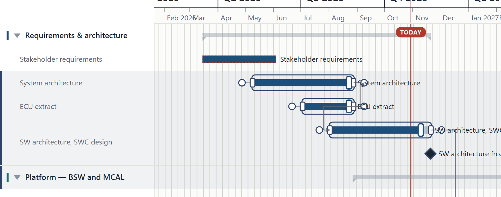
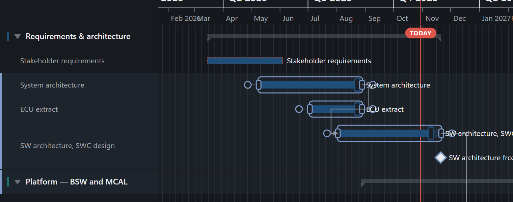
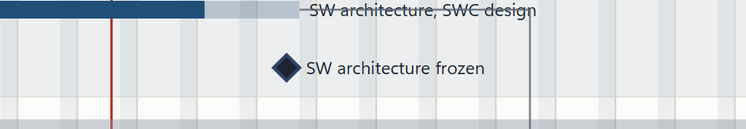
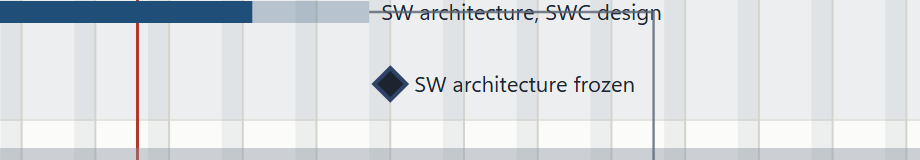
Captured at 5.27 px/day, where a week column is wide enough for the move to read.
start means the date’s own point, not the column’s
start. That is what every plan written before this field meant, so
no existing roadmap moves by a pixel. If you would rather “Start” snapped
a mid-month date to the 1st, that is a different rule and a one-line
change.
Rows are the subject of Delete only when a row is what you picked. The first item in the selection decides, which is the convention the panel already used for which fields to show.
The milestone diamond is 8px half-width, down from 11. It was 22px across on a 26px row band.
SRS-EDIT-080 … SRS-EDIT-082 · SRS-ELEM-070 · SRS-ELEM-071
“I double-clicked on the label, and it did not enter edit mode. I had to
double-click on the task where the label was not.” A task’s label was
rendered with pointer-events: none and carried no handler at
all, so it was not clickable in any way — the rename gesture existed only
on the bar itself. A milestone’s label had the gesture all along, which
is why it worked there and not here.
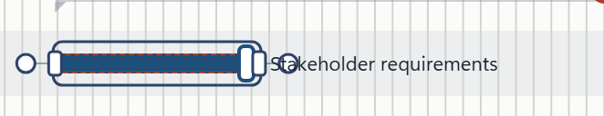
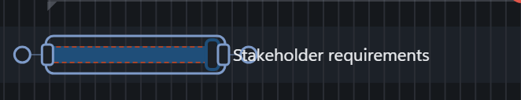
A label drawn ON the bar stays inert. A label outranks a bar body in the hit stack, so making it clickable would send the press that drags a bar to its own name. Only labels beside the bar take the rename.
A resize grip that is not drawn no longer outranks visible ink.
Found while measuring the narrower chart: a press on a visible connector
resolved to a bar’s end grip — rank 60 against the connector’s 10 — with
nothing but the connector under the pointer, and the cursor said
ew-resize over a line it would not resize. Approaching a bar
end from outside still begins a resize.
SRS-EDIT-079 · SRS-EDIT-083 · SRS-ELEM-072 · SRS-ELEM-073
| Gate | Result | Count |
|---|---|---|
tsc -b | clean | 0 errors |
eslint . | clean | 0 errors, 17 warnings |
vitest run | all passed | 435 |
| Playwright · desktop | all passed | 148 |
| Playwright · tablet | all passed | 55 |
| Playwright · mobile | all passed | 49 |
| Playwright · all three, final run | 0 failed | 444 reported, 192 skipped |
| Smoke · dev server and built file | no console or page errors | 2 / 2 |
It took three full runs to get there, and the two red ones are the interesting part. The first reported 441 tests with 2 failures, both tablet marker tests — not flakes. Selecting a marker added the Selection section to a foot-docked panel that sized itself to its contents, which took 74px out of the chart; everything in the plot moved up, and the second click of the double-click landed where its target no longer was. The panel has a fixed height now, the chart holds at 520px through a selection, and a gate was added for it and red-checked: with the old CSS it fails with 713 against 638.8.
That gate then caught the same defect on the other axis, on the phone
project: selecting something widened the chart from 660px to 702px. A
1fr grid track keeps min-width: auto, so the
panel’s own content was pushing the shell wider — which the floating bar
could never do, being absolutely positioned. Both the chart column and
the stacked layouts are minmax(0, 1fr) now, and the third
run was clean: 444 reported, 252 passed, 192 skipped by project, none
failed.
Known and not fixed: the Playwright run hangs in teardown after the last
test reports — worker process did not exit within 300000ms after
stop, force-killed it. Every test reports first, so no result is
lost, but a CI job would spend five minutes per worker unwinding. It is
not in the files this release touched and has not been diagnosed.
Three regression tests were rewritten rather than repaired: each was passing on geometry rather than on behaviour, and the narrower chart exposed it. A “body drag” pressed 4px inside the start grip and resized; a weekend-shading assertion ran at a zoom below the suppression threshold, where zero bands is also what no setting produces; and the document-settings helper became a toggle whose state persists, so calling it after a reload closed the section it meant to open.